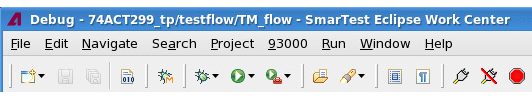

Menu bar
The Menu Bar along the top of the main window includes a series of pull-down menus.
SmarTest Eclipse Workcenter main menu bar

- File
- Controls for opening, closing and saving files, importing and exporting projects, saving data, switching workspaces, accessing properties, and printing.
- Edit
- Controls for finding and modifying data.
- Navigate
- Controls for navigating annotations, trees, files, and repositories.
- Search
- Controls for search tools.
- Project menu
- Controls for opening, cleaning and building projects.
- 93000 menu and its tools
- Controls for accessing the SmarTest tools
- Run menu
- Controls for running and debugging your test programs, testflows, and test methods.
- Window menu
- Controls for navigation and managing views and perspectives.
- Help
- Online help information.
Functional changes
- Introduced in SmarTest 7.5.4